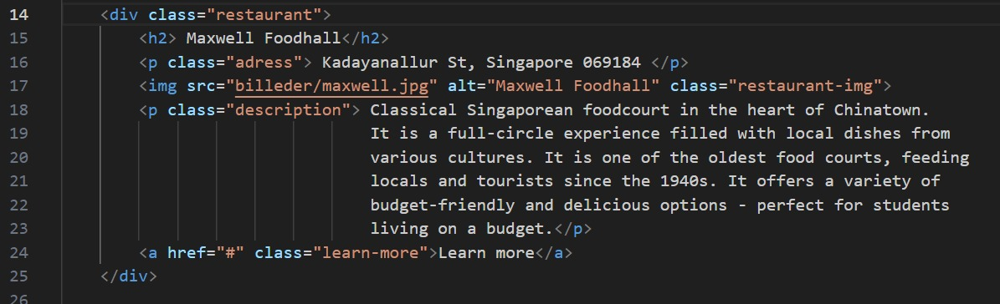

Vi skal udvikle en app til de nye 3.g'ere, der skal besøge vores GCP-destinationer. Da vi har været i Singapore, vil appen fokusere på denne destination. Den skal fungere som en mobil applikation og fungere som en tourguide, der gør det lettere for de nye 3.g'ere at få mest muligt ud af deres rejse.
Design:
Vi har valgt lilla som den primære farve på hjemmesiden, da vi mener, den repræsenterer landet godt. Farven afspejler også byens nattebillede, som vist på hovedsiden. Dette trækker brugerens opmærksomhed mod billedet, som bliver fremhævet. På hovedsiden præsenterer vi en faktaboks med grundlæggende informationer om landet, og nedenunder har vi seks bokse, der hver fører til en ny underside med mere information. Brugen af undersider gør appen mere overskuelig og let at navigere. På transportsiden har vi desuden inkluderet et interaktivt kort over Singapore.

klik nedstående knap for at se vores app :D
Beskrivelse af kodestump:

14. Gruppering af indhold, anvender CSS til “restaurant”, som er defineret i vores style sheet. Anvendelsen af CSS gør det let at lave et kontinuert design på hele hjemmesiden.
15. En overskrift for maxwell food hall
16. Dette er et afsnit som indeholder adressen til restauranten, med en klasse kaldet "address" for styling.
17. indsættelse af et billed af maxwell food hall, alt-attributtet giver en tekstbeskrivelse af billedet, som ikke vises på hjemmesiden, class-attributtet giver mulighed for anvendelse af style (CSS)
18. anvendelse af style for description beskrevet i CSS: beskrivelse af restauranten som nu bliver stylet efter "description"
19. Dette er en lenke som gir mulighet for videre læsning om restauranten. href="#" betyder at lenken ikke leder til en specifik side, da vi ikke har vidre udviklet den i nu. Klassen "learn-more" kan bruges til styling.
Strukturen for denne kodestump er implementeret gentagende gange i vores kode, hver gang vi introducerer et nyt spisested på where to eat undersiden.
Imellem header tags, "head" "/head", placeres metadata som browseren skal bruge for at vise siden rigtigt. Her bruges meta charset="UTF-8" så browseren kan skrive æåø rigtigt.